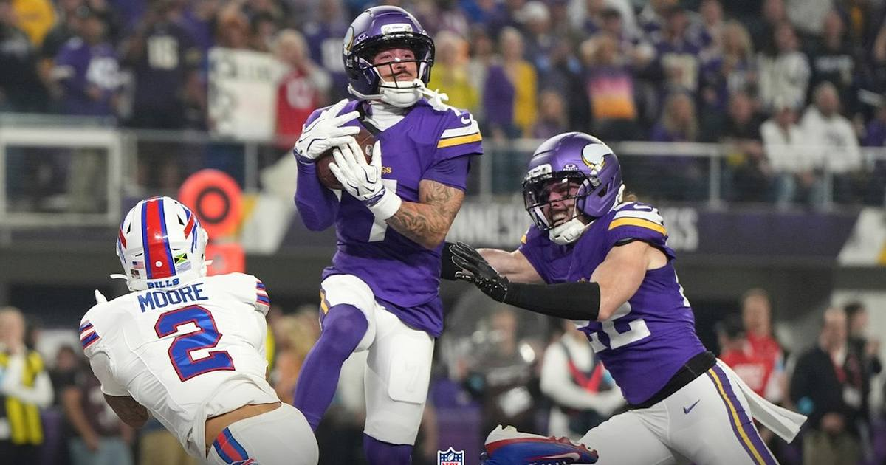

Bills grind the Vikings 23-6 on Monday night — Buffalo's best start since 1993
Josh Allen and James Cook ground the Vikings down in a 23-6 Monday night win — Buffalo is 7-1, its best eight-game start since 1993, while Minnesota's quarterback question just got louder.

Disclosure: this post contains affiliate links. I earn a commission on qualifying purchases.
The night
The Buffalo Bills beat the Minnesota Vikings 23-6 at U.S. Bank Stadium on Monday night, and it was every bit as one-sided as the score. Buffalo is 7-1, its best eight-game start since 1993, winners of four straight. Minnesota lost its second straight after a 6-0 start, and the Chicago Bears took over first place in the NFC North.
Josh Allen went 21-of-31 for 234 yards with a touchdown and an interception, and James Cook carried 31 times for 107 yards and a score. Keleki Latu caught a 25-yard touchdown pass just before halftime. Tyler Bass kicked three field goals, including a 52-yarder, extending his franchise-record streak to 24 straight makes. Buffalo held the ball for 42 minutes and 32 seconds and outgained Minnesota 339-178.
The Vikings' offense never got out of first gear. Carson Wentz went 8-of-25 for 81 yards with two interceptions and was benched for Max Brosmer in the fourth quarter. Minnesota finished with 178 total yards, nine first downs, 0-for-8 on third down and three turnovers. Will Reichard's 43- and 53-yard field goals were the only points of the night.
The quarterback question
This is the part that matters going forward. USA Today's takeaway from the game was blunt: Minnesota must trade for a quarterback. Wentz was starting because J.J. McCarthy is out, and the Vikings' offense has now scored 6 points in a game where the defense gave them chances to stay in it. Brosmer's two-minute drill ended at the Buffalo 13.
The Vikings were 6-0 two weeks ago. They're 6-2 now, still very much in the playoff race, but the quarterback position is the story of their season — and Monday night was the loudest evidence yet. Buffalo, meanwhile, just keeps grinding. Four straight wins, a defense that gave up 178 yards, and a running game that bled the clock dry.
Watch
Watch the full game highlights: Buffalo Bills vs. Minnesota Vikings | Week 10 | Nov 9, 2026 — NFL. The full game highlights from the Bills' 23-6 win in Minnesota, including Cook's touchdown and the Vikings' three turnovers.
Gear up: Fanatics